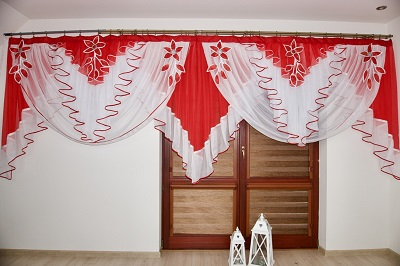
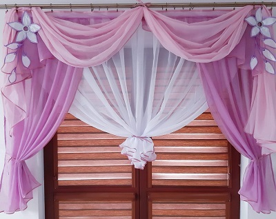
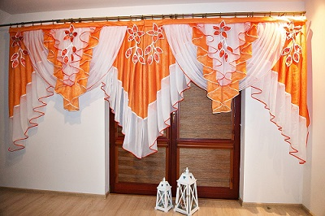
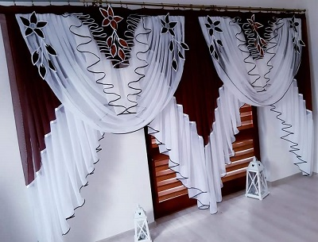

Witam! skoro się tu znalazłeś/aś to pewnie chcesz dowiedzieć się kim jestem oraz co robię, nie ma sprawy!.
Otóż jestem krawcową od niemalżę kilkunastu lat, wiem trochę długo lecz uwielbiam uszczęśliwiać ludzi swoimi
firanami, zasłonami w skrócie dekoracjami okiennymi.
Mimo tylu lat pracy dalej sprawia mi to radość i jak narazię nie zamierzam zmieniać swojej profesji.
Raczej niemożliwę byłoby rozpisać o wszystkich wystrojach okiennych jakie do tej pory udało mi się uszyć, ponieważ było ich
naprawdę bardzo dużo.
Może pokażę ci kilka z nich:
Jeśli chciałabyś mieć wystrój okien, które zawsze będą cieszyć i wzbudzać radość w twoich oczach, sprawdź proszę mój mały sklep gdzie powoli wrzucam wszystkie firany / dekoracje okienne jakie na bieżąco tworzę, może uszyję podobne dla ciebię.